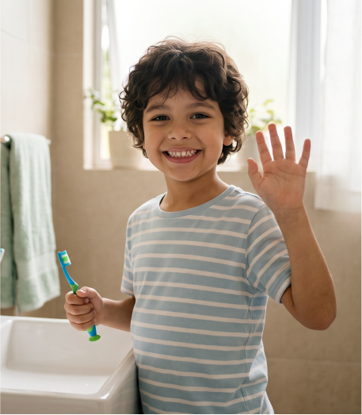

Ao longo desta capacitação, foram abordados conteúdos fundamentais para a compreensão e promoção da Saúde bucal de pessoas com Transtorno do Espectro Autista (TEA), integrando conhecimentos teóricos, estratégias práticas e abordagens humanizadas de cuidado.
A integração de todos esses conteúdos evidencia que o cuidado da Saúde bucal dessas pessoas, deve ser compreendido de forma ampla, contínua e multidisciplinar. Mais do que prevenir e tratar doenças bucais, é necessário construir experiências positivas, respeitosas e acessíveis, que promovam conforto, autonomia e qualidade de vida.
Espera-se que os conhecimentos e estratégias apresentados ao longo deste curso possam contribuir para práticas mais inclusivas, humanizadas e baseadas em evidências, fortalecendo a atuação de cuidadores, familiares e profissionais da Saúde.
A construção de ambientes acolhedores, previsíveis e adaptados representa um passo essencial para favorecer não apenas a Saúde bucal, mas também o bem-estar integral das pessoas com TEA e de suas famílias.
